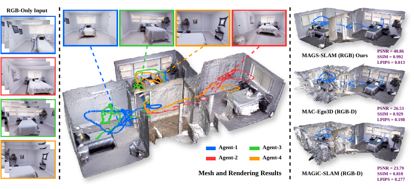
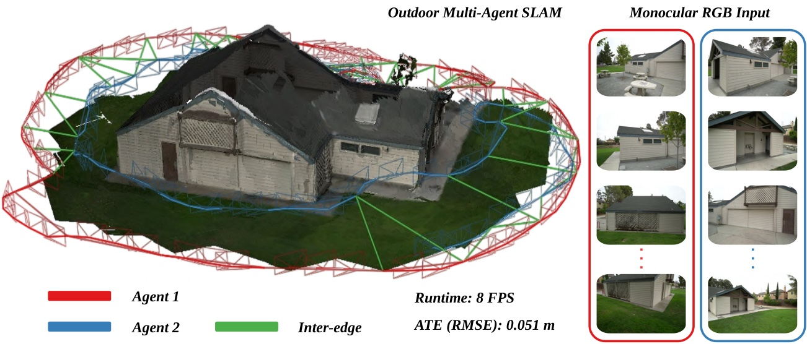
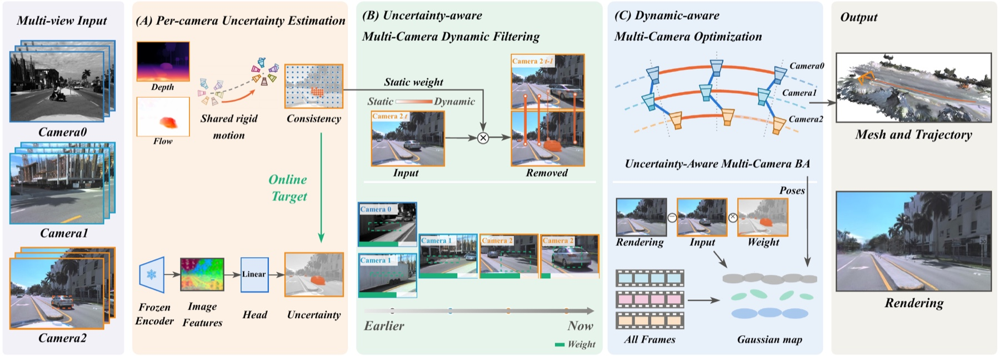
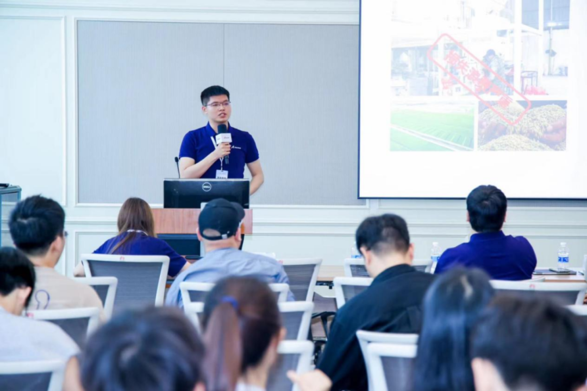

University of Liverpool, Liverpool, U.K. Joint Ph.D. training, Computer Science and Informatics.
2025 – 2027Qi Shao
Ph.D. Student
College of Intelligent Systems Science and Engineering, Harbin Engineering University
School of Computer Science and Informatics, University of Liverpool (joint training)
Email: qi.shao0823@gmail.com

Biography
I am a Ph.D. student in Control Science and Engineering at Harbin Engineering University, advised by Prof. Liang Li and working with Prof. Hong Liang. I am currently a jointly trained Ph.D. student in the School of Computer Science and Informatics, University of Liverpool, visiting the Physical Intelligence Lab in the Digital Innovation Facility and working with Dr. Baoru Huang and Prof. Anh Nguyen. I received my B.Eng. degree from the College of Intelligent Systems Science and Engineering, Harbin Engineering University.
My research focuses on 3D scene representation and SLAM for multi-robot systems and embodied AI. I study how robots build shared spatial memory by connecting geometric mapping, 3D Gaussian Splatting, semantic scene understanding, and foundation-model priors for navigation, manipulation, and collaboration.
News
- [10/2026]MAGS-SLAM is accepted by IEEE Transactions on Automation Science and Engineering (T-ASE).
- [05/2026]Personal homepage online.
- [08/2025]Started joint Ph.D. training in the School of Computer Science and Informatics, University of Liverpool.
- [08/2023]One paper accepted by IEEE International Conference on Mechatronics and Automation (ICMA).
Selected Publications

MAGS-SLAM: Monocular Multi-Agent Gaussian Splatting SLAM for Geometrically and Photometrically Consistent Reconstruction
Qi Shao*, Zhihao Cao*, Shuhao Zhai, Jing Zhang, Anh Nguyen, Hesheng Wang, Baoru Huang
IEEE Transactions on Automation Science and Engineering (T-ASE), 2026
An RGB-only multi-agent 3D Gaussian Splatting SLAM framework for collaborative reconstruction without depth sensors.

CoMo3R-SLAM: Collaborative Monocular Dense SLAM with Learned 3D Reconstruction Priors for Outdoor Multi-Agent Systems
Qi Shao*, Zhihao Cao*, Shuhao Zhai, Feng Tian, Anh Nguyen, Hesheng Wang, Baoru Huang
Under review, 2026
Feed-forward 3D reconstruction priors anchor scale across agents and verify inter-agent links, without depth sensors or known intrinsics.

DRMC-SLAM: Dynamic-Robust Multi-Camera SLAM via Multi-View Geometric Consistency
Qi Shao*, Zhihao Cao*, Taoyu Wu, Shuhao Zhai, Anh Nguyen, Haoran Luo, Hong Liang, Baoru Huang
Under review, 2026
Shared ego-motion of surround-view cameras weights tracking and mapping against moving objects and recovers occluded static regions.
* Equal contribution.
Patent. Q. Shao, "A multi-angle adjustable mounting bracket for measurement and control instruments," China Utility Model Patent CN 213207102 U, 2021.
Projects

Ascend AI-Based Moderate Rice Processing Solution (Ascend AI Developer Stories, 2023)
An edge-cloud solution built on Ascend computing and MindSpore that inspects rice quality during production. It segments small, adhesive grain features such as rice embryos with 98.5% accuracy and measures whiteness, embryo retention, chalkiness, and embryo integrity. Presented at the Ascend AI Developer Summit 2023.
Education
Harbin Engineering University, Harbin, China. Ph.D. in Control Science and Engineering.
2023 – 2028Harbin Engineering University, Harbin, China. B.Eng. in Measurement and Control Technology and Instruments.
2019 – 2023Industry Experience
Huawei Technologies, Beijing, China. Deep Learning Software Engineer Intern.
2022 – 2023Baidu Inc., Beijing, China. Deep Learning Algorithm Engineer Intern.
2020 – 2022Selected Honors
- National Gold Award, "Challenge Cup" National College Student Extracurricular Academic Science and Technology Contest, 2024.
- National First Prize, "Huawei Cup" China Postgraduate AI Innovation Competition, 2024.
- Chen Geng Scholarship Candidate (highest student scholarship of Harbin Engineering University), 2024.
- Huawei Outstanding Student Developer, Huawei Developer Evangelist, 2024.
- National Silver Award, China International College Students Innovation Competition, 2023.
- Finalist Award, Mathematical Contest in Modeling (MCM), 2022.
- Third Prize, iFLYTEK Creative Group, National College Student Smart Car Competition, 2022.
- First-Class Academic Scholarship for Doctoral Students, Harbin Engineering University, 2023 – 2026.
Academic Service
- Journal reviewer: TPAMI, IJCV, TIP, TCSVT, T-RO, T-ASE, TIM.
- Conference reviewer: CVPR, ICCV, ECCV, NeurIPS, ICLR, AAAI, ACM MM, ICRA, IROS, MICCAI, ICASSP.